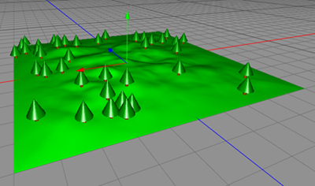

The Particle Mesh is a dynamic parametric particle object. It distributes
particles using a mesh object as reference. Using a Particle-Mesh object to
creating fields of grass on a hillside or tree forests on a rocky island can be
achieved.

A Particle Mesh distributing tree particles over a mesh object.
Properties
Mesh: The mesh object which will be used to position the particles.
Type: Method of placing the particles.
Polygon selection: Use only a polygon selection of the mesh.
Number of particles: Number of particles which are placed on the mesh surface.
Align particles: Align the particles to the mesh normal's.
|